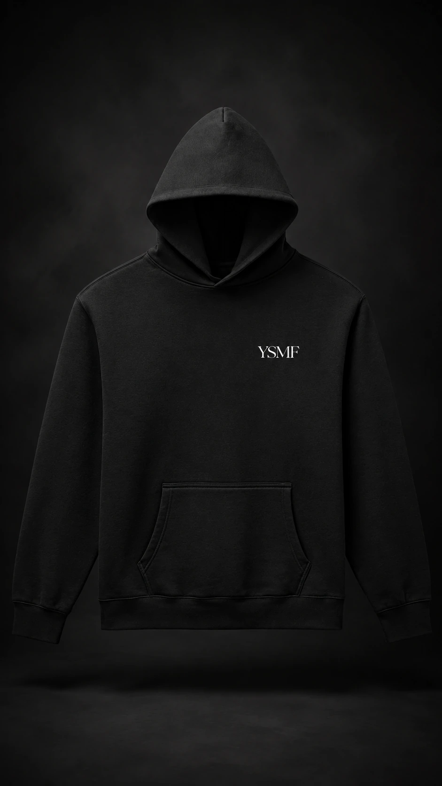

YSMF
Minimal — Drop 01
Wear It Like You Mean It. The collection is being prepared behind the scenes.

YSMF
Wear it like
you mean it.
Clean lines. Premium-feeling pieces. Understated branding.
01
Quiet confidence.
Everyday wear.
YSMF Minimal takes the attitude behind the brand and strips away everything that does not need to be there. Neutral tones, clean silhouettes and a small YSMF mark make Drop 01 easy to wear without losing its identity.
Less noise.
More intent.
Black, charcoal, cream and white. A six-piece first drop designed around versatility, subtle branding and pieces that work together without trying too hard.
Simple by design.
Made to be worn.
Drop 01 is built around the pieces you reach for repeatedly: hoodies, tees, a crewneck and a clean dad hat. The branding stays deliberate and restrained so the clothes do the work.
No oversized graphics. No unnecessary details. Just YSMF.
The essentials.
A closer look at the clean contrasts that define the first YSMF Minimal collection.


Drop 01 in motion.
Wear It Like You Mean It.
Drop 01.
The product grid is connected to your Fourthwall Minimal collection.
While the collection remains private, your preview may show the private-product message here.
Once the Fourthwall collection is public and minimalIsLive is enabled, the products populate automatically.
Wear it like
you mean it.